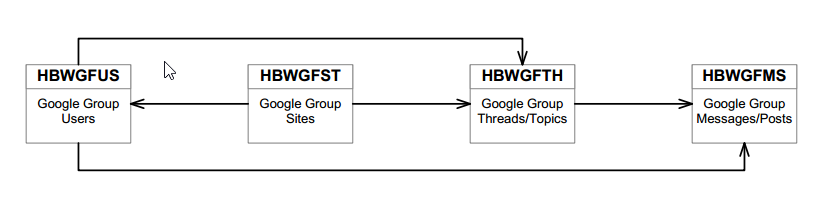
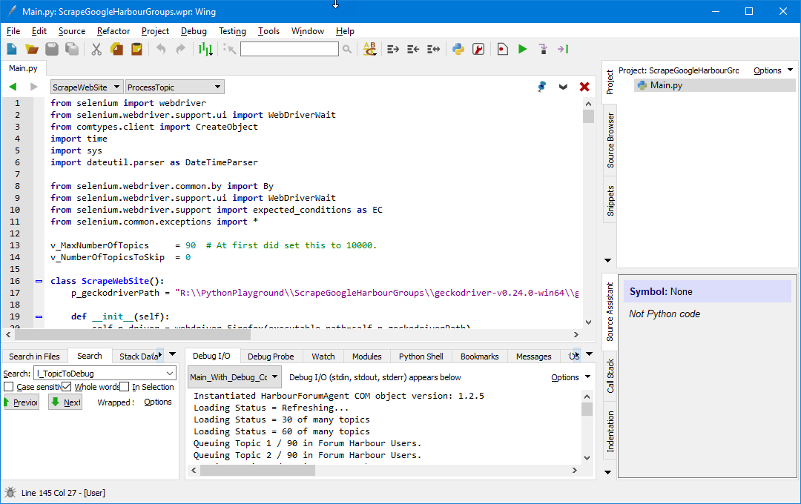
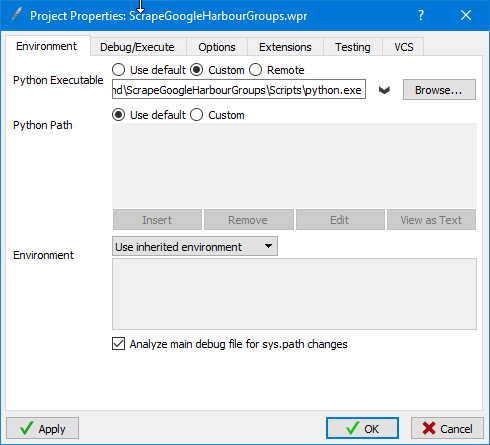
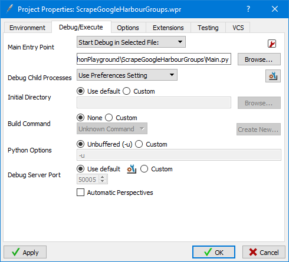
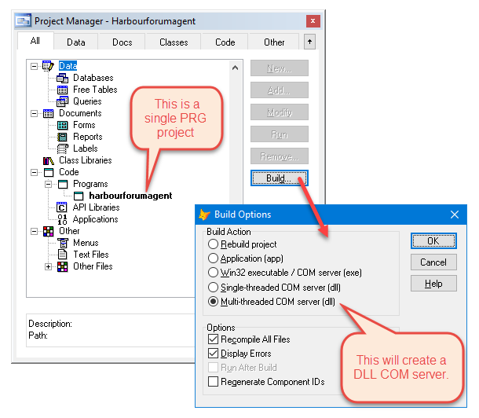

Web Scraping Harbour Google Groups
 Author: Eric Lendvai
Author: Eric Lendvai
Table of Contents
- Target Audience
- Introduction
- Data Storage
- Setting Up Python Environment
- Python IDE
- Python Program
- The VFP COM DLL
- Conclusion
Target Audience
- Harbour developer interested in learning about Python and VFP (Visual FoxPro)
- Python developer interested in web scraping with Selenium
- VFP developer interested in calling VFP code from Python
Introduction
In
this article, we are going to learn how to scrape the content of Google
Groups, in particular the two Google Groups dedicated to the Harbour
programming language.
There are multiple
solutions for web scraping. The first decision you have to make is which
computer language and toolset to use to accomplish the task.
In
the past, I used a VFP-only solution, controlling the Microsoft
Internet Explorer (IE) WebBrowser ActiveX control from a VFP form, and
navigating to the web sites, or by using third party controls to request
a web page and then parsing the returned HTML content.
Many
sites, including the Google Groups web site, are now using delayed
loading techniques to progressively display the content you are looking
for.
Also, IE is rapidly losing market share, and will probably not be supported much longer by Microsoft.
One
of the safest and completely reliable ways to fetch web site contents
is to control a web browser itself, like Firefox or Chrome.
For that reason, most developers now turn to Selenium to automate browsers. For more information, visit https://www.seleniumhq.org/
The
Selenium web drivers, provided by most modern web browsers, are the
"glue" needed to control the browsers. Those are free to use, and allow
you to programmatically control all aspects of web browsers.
Now
that we decided to use Selenium, which computer language should we use?
Selenium has bindings for the following computer languages: Ruby,
Java, C#, Python, JavaScript, Haskell, Objective-C, PHP, R ... as
you can see, no Harbour, VFP or pure C.
My
other requirement is to store the scraped data in DBF/FPT tables that
can be accessed directly by VFP. The current harbour.wiki site is still
using VFP. We also could have used any other ODBC-compliant database,
since VFP has a SQLConnect engine. But, still, the good old DBF tables
are the fastest and take up the least amount of space.
For
that reason, the easiest solution would be to create a VFP COM server
that can be consumed (called) from one of the other computer
languages.
Luckily for me, Python has one of the best
bindings and most documented solutions for using Selenium, and also
allows us to call VFP COM objects, as long as we use the Python 32-bit
interpreter. I could have created a Harbour COM server (object) instead
but, to be certain the indexes are 100% compatible with VFP, it was
easiest to develop with VFP. Also, VFP, has a phenomenal local SQL
syntax. More on that later.
In addition, this scraper is designed to progressively re-scrape Google Groups and add new content on a regular basis.
Data Storage
Before
we do the actual coding, let's review the data structure I chose to
store all the data we are going to scrape. The following diagram
illustrates the 4 tables needed. The table names are a little cryptic,
since I wanted to stay with 8 character long names (this is due to
wanting to include the parent table name in the referential field name,
and free VFP tables can only handle 10-character field names). Also,
originally, I was referring to Forums, instead of Groups, hence GF
(Google Forum) instead of GG (Google Groups). The leading "HBW" stands
for Harbour Wiki. By the way, I use the word "Thread" interchangeably
with "Topic" and "Post" with "Message".

In
our case, the "Google Group Sites" table (HBWGFST) will have 2 records:
one for the User Group, and one for the Developer Group. Having this
table allows us to have additional groups if needed, and also makes it
easier when issuing SELECT SQL statements to report the data.
The other 3 tables will be populated by the web scraper.
The
"Google Group Users" (HBWGFUS) table is a child table of the Site table
(HBWGFST), since users are allowed to name themselves differently in
each group they belong to (meaning, if there is a member of the
Developer group that wants to post a message in the User group, he/she
could use a different name).
When a Topic
(Thread) is read for the first time, a record will be added to HBWGFTH,
and also the first message in HBWGFMS. Both will point to the same user
record (HBWGFUS). Additional messages (HBWGFMS) in the topic will be
linked to the topic record in HBWGFTH, and will most likely point to a
different record in HBWGFUS, unless it is a message from the same person
that created the Topic.
Every table has the following fields: KEY, SYSC and SYSM.
KEY
contains a unique Integer. To make it easier to interface with other
systems (databases), I did not use the Auto Increment property.
SYSC has the creation time stamp. SYSM has the last modified time. These two fields are used by a custom transaction log system.
All the field starting the "P_" are used as foreign keys to the table of the same name.
The following is the exact table and index specification:
Table HBWGFST: Google Forum Sites============== Index Tags ---------- Tag Name: KEY Expression: KEY Tag Name: NAME Expression: NAME Fields ------ KEY 4 Integer SYSC DateTime SYSM DateTime NAME 60 Character URL 200 Character STATUS 1 Numeric 1 = Active 2 = InactiveTable HBWGFUS: Google Forum Users============== Index Tags ---------- Tag Name: KEY Expression: KEY Tag Name: P_HBWGFST Expression: P_HBWGFST Tag Name: NAME Expression: NAME Fields ------ KEY 4 Integer SYSC DateTime SYSM DateTime P_HBWGFST 4 Integer NAME 200 CharacterTable HBWGFTH: Google Forum Threads / Topics============== Index Tags ---------- Tag Name: KEY Expression: KEY Tag Name: P_HBWGFST Expression: P_HBWGFST Tag Name: P_HBWGFUS Expression: P_HBWGFUS Tag Name: ID Expression: ID Tag Name: FSTMESSDT Expression: FSTMESSDT Tag Name: LSTMESSDT Expression: LSTMESSDT Fields ------ KEY 4 Integer SYSC DateTime SYSM DateTime P_HBWGFUS 4 Integer P_HBWGFST 4 Integer SUBJECT 200 Character ID 30 Character Help: Google Thread ID LSTMESSDT DateTime Help: Last Message Date and Time FSTMESSDT DateTime Help: First Message Date and Time GLGMESSDT DateTime Help: Thread Time as per Google. Should have been the latest message time, but sometimes, the thread time is off by a few seconds. This is important since this is one of the elements used to decide if should rescan the thread. CURMESSCNT 4 Integer Help: Number of Current Messages (non-deleted) DELMESSCNT 4 Integer Help: Number of Deleted Messages VIEWCNT 4 Integer Help: Number of ViewsTable HBWGFMS: Google Forum Messages============== Index Tags ---------- Tag Name: KEY Expression: KEY Tag Name: P_HBWGFTH Expression: P_HBWGFTH Tag Name: P_HBWGFUS Expression: P_HBWGFUS Tag Name: DATI Expression: DATI Fields ------ KEY 4 Integer SYSC DateTime SYSM DateTime P_HBWGFUS 4 Integer P_HBWGFTH 4 Integer DATI DateTime HTML Memo DELETED Logical ID 20 Character Help: Google ID, detected using .//div[contains(@id,'b_action_')]
Setting Up Python Environment
Since we are also using VFP, all development will be done in Windows. All the code was tested under Microsoft Windows 10 Pro.
I am currently using Python 3.6.3 32-bit. Feel free to use any newer version of Python, as long as you use the 32-bit version.
I am also using the Python virtual environment system introduced in Version 3.3, see https://docs.python.org/3/library/venv.html
To
make it easier on me, I created a few batch files to automate the
creation of the Python virtual environment (a local copy of Python with
local PATH value), and to download the necessary Python Packages.
For
this project, I placed the Python source code in the folder
r:\PythonPlayground\ScrapeGoogleHarbourGroups\, and the batch files in
r:\PythonPlayground\
Feel free to modify the batch files to match your needs.
Starting
the CMD_ScrapeGoogleHarbourGroups.bat file from Windows/File Explorer
leaves you in a command shell that is ready for your project.
| File: CMD_ScrapeGoogleHarbourGroups.bat |
r:cd \PythonPlaygroundmd \PythonPlayground\ScrapeGoogleHarbourGroupscall Setvenv ScrapeGoogleHarbourGroupscall pip3_ScrapeGoogleHarbourGroups call pip3_list.bat cd R:\PythonPlayground\ScrapeGoogleHarbourGroupscmd
The following batch file is used to create and "Activate" the Python virtual environment:
| File: SetVenv.bat |
@echo offclsecho.IF "%~1"=="" GOTO LabelMissingParameterIF NOT "%~2"=="" GOTO LabelTooManyParametersecho %1R:cd \PythonPlayground"C:\Program Files (x86)\Python36-32\python" -m venv %1call %1\scripts\activatepython --versionrem ** The following commands will fail in Windows since cannot update a currently running exe.rem ** See https://github.com/pypa/pip/issues/2863python -m pip install --upgrade pipcall pip3_list.batgoto LabelEnd:LabelMissingParameterecho Missing Parametergoto LabelEnd:LabelTooManyParametersecho Too Many Parametersgoto LabelEnd:LabelEndecho.
| File: pip3_ScrapeGoogleHarbourGroups.bat |
pip install --upgrade seleniumpip install --upgrade comtypes pip install --upgrade python-dateutil
To list the current list of installed Python packages.
| File: pip3_list.bat |
@Echo .@pip3 list --format=columns
Python IDE
There
are many ways you can edit, run and debug Python programs. I will
simply document how I personally develop in Python, specifically my
setting for this project.
I use the IDE Wing from wingware: it is a commercial IDE (see https://wingware.com/).
Many other Python developers use PyCharm. Cost-wise, they are very
similar. There are more learning materials for PyCharm, but Wing is
coded in Python itself (as opposed to PyCharm, which is developed in
Java). I personally wanted an editor I can extend using Python. And you
can get the source of of Wing (with NDA requirement). The
following are print screens of my Wing environment:



I
am going to use Firefox as the browser used by the web scraper. So
ensure you download and install the latest Firefox 64-bit if you are on
Windows 64-bit.
You will also need to download the Selenium driver for Firefox. See https://github.com/mozilla/geckodriver/releases
and place the file geckodriver.exe in
R:\PythonPlayground\ScrapeGoogleHarbourGroups\geckodriver-v0.24.0-win64,
for example. Even though we are using Python 32-bit, you need to
download the 64-bit driver if you are developing in Windows 64-bit.
It is always best to use the latest version of the Firefox browser and geckodriver.exe file!
Python Program
Place the following Main.py file in the folder R:\PythonPlayground\ScrapeGoogleHarbourGroups\
I will not explain the entire source code separately. Please go over the icons to see extra explanations.
| File: Main.py |
from selenium import webdriverfrom selenium.webdriver.support.ui import WebDriverWaitfrom comtypes.client import CreateObjectimport timeimport sysimport dateutil.parser as DateTimeParserfrom selenium.webdriver.common.by import Byfrom selenium.webdriver.support.ui import WebDriverWaitfrom selenium.webdriver.support import expected_conditions as ECfrom selenium.common.exceptions import *v_MaxNumberOfTopics = 90 #At first did set this to 10000.v_NumberOfTopicsToSkip = 0class ScrapeWebSite(): p_geckodriverPath = "R:\\PythonPlayground\\ScrapeGoogleHarbourGroups\\geckodriver-v0.24.0-win64\\geckodriver.exe"def __init__(self): self.p_driver = webdriver.Firefox(executable_path=self.p_geckodriverPath) self.p_driver.implicitly_wait(5) self.p_wait = WebDriverWait(self.p_driver, 30) self.p_HarbourForumAgent = CreateObject("HarbourForumAgent.HarbourForumAgent") self.p_HarbourForumAgent.OpenData("r:\\waf\\hbw\\data\\") #sys._wing_debugger.Break() If used, this call pauses the WingWare debugger. print("Instantiated HarbourForumAgent COM object version: {}".format(self.p_HarbourForumAgent.version)) self.p_WaitPageLoad = WebDriverWait(self.p_driver, 120, poll_frequency=1, ignored_exceptions=[NoSuchElementException, ElementNotVisibleException, ElementNotSelectableException]) self.p_ForumURLTopics = "Not Set" self.p_ForumURLMessages = "Not Set" self.p_ForumName = "Not Set" def __del__(self): #===== Closed Browser ===== self.p_driver.quit() def SelectUserForum(self): self.p_ForumURLTopics = "https://groups.google.com/forum/#!forum/harbour-users" self.p_ForumURLMessages = "https://groups.google.com/forum/#!topic/harbour-users" self.p_ForumName = "Harbour Users" def SelectDeveloperForum(self): self.p_ForumURLTopics = "https://groups.google.com/forum/#!forum/harbour-devel" self.p_ForumURLMessages = "https://groups.google.com/forum/#!topic/harbour-devel" self.p_ForumName = "Harbour Developers" def ProcessTopic(self,par_TopicCounter,par_NumberOfTopics,par_TopicID,par_Subject,par_By,par_VFPTTOCLastTopicTime,par_NumberOfMessages,par_NumberOfViews): #Determine if thread is already on file with the complete number of messages. Also fix the View count if needed. l_COMResult = self.p_HarbourForumAgent.UpdateTopicStart(self.p_ForumName, par_TopicID, par_Subject, par_By, par_VFPTTOCLastTopicTime, #Used to help detect if should even scan the message. par_NumberOfMessages, #Used to help detect if should even scan the message. par_NumberOfViews) #Used to update the View Count l_hbwgfth_key = l_COMResult[7] #The return value is after the passed parameters if l_hbwgfth_key != 0: #0 means thread already on file with the same number of messages. print("Forum = {} -- Processing Topic {} / {}. Topic Name = {} -- TopicID = {} -- By = {} -- Topic Time = {}".format(self.p_ForumName,par_TopicCounter,par_NumberOfTopics,par_Subject,par_TopicID,par_By,par_VFPTTOCLastTopicTime)) l_URL = "{}/{}".format(self.p_ForumURLMessages,par_TopicID) l_URL += "%5B1-{}%5D".format(1000) #Since the number of Posts/Messages do not include the hidden ones, will fake we should load 1000 messages for the current topics self.p_driver.get(l_URL) try: l_element = self.p_WaitPageLoad.until(EC.presence_of_element_located((By.ID, 'tm-tl'))) except: pass l_ListOfDeletedMessages = self.p_driver.find_elements_by_xpath("//span[contains(.,'This message has been deleted.')]") l_NumberOfDeletedMessages = len(l_ListOfDeletedMessages) l_ListOfMessages = self.p_driver.find_elements_by_xpath("//*[@id='tm-tl']/div") l_NumberOfMessages = len(l_ListOfMessages) print('Number of Current Messages = {} -- Number of Deleted Messages = {}'.format(l_NumberOfMessages,l_NumberOfDeletedMessages)) if l_NumberOfMessages > 0: for l_Message in l_ListOfMessages: #Try to find the Message ID. l_Elements = l_Message.find_elements_by_xpath(".//div[contains(@id,'b_action_')]") #Search for span child of l_Message that as the exact matching class if len(l_Elements) >= 1: l_MessageID = l_Elements[0].get_attribute("id") l_MessageID = l_MessageID[9:] #Remove first 9 characters "b_action_" else: l_MessageID = "" #Try to find the location of the Author of the message l_Elements = l_Message.find_elements_by_class_name("F0XO1GC-F-a") if len(l_Elements) >= 1: #Get the first 'Written By' location. Will only care about the last person who edited the message l_MessageBy = l_Elements[0].text #Try to find the location of the message time. l_Elements = l_Message.find_elements_by_xpath(".//span[@class='F0XO1GC-nb-Q F0XO1GC-b-Eb']") #Search for span child of l_Message that as the exact matching class if len(l_Elements) == 1: l_MessageTime = l_Elements[0].get_attribute("title") l_DatiMessageTime = DateTimeParser.parse(l_MessageTime) #Will be local time-based l_VFPTTOCMessageTime = l_DatiMessageTime.strftime("%m/%d/%Y %I:%M:%S %p") print("Message By = {} -- Time = {} -- ID = {}".format(l_MessageBy,l_VFPTTOCMessageTime,l_MessageID)) l_MessageHTML = "" l_Elements = l_Message.find_elements_by_xpath(".//div[@dir='ltr']") if len(l_Elements) > 0: l_MessageHTML = l_Elements[0].get_attribute('innerHTML') #It is possible multi block exists, but they are simply reference to other text. else: l_Elements = l_Message.find_elements_by_xpath(".//div[@class='F0XO1GC-ed-a']") #Search for span child of l_Message that as the exact matching class for l_Element in l_Elements: l_MessageHTML += l_Element.get_attribute('outerHTML') if len(l_MessageHTML) > 0: l_COMResult = self.p_HarbourForumAgent.RecordMessage(l_MessageID, l_MessageBy, l_VFPTTOCMessageTime, l_MessageHTML) else: print("failed to find HTML") else: print("failed to find Message Time") else: pass #Message was deleted probably #When there is at least 1 Message l_COMResult = self.p_HarbourForumAgent.UpdateTopicEnd(l_NumberOfDeletedMessages) else: print("Processed Forum {}, Topic {} / {}. No Change.".format(self.p_ForumName,par_TopicCounter,par_NumberOfTopics)) def RunGetAllTopics(self): l_driver = self.p_driver l_driver.get(self.p_ForumURLTopics) #===== Get List of Topics ===== l_NumberOfTopics = 0 l_FetchCounter = 0 l_PreviousLoadingStatus = "Initial Load" while True: l_FetchCounter += 1 try: l_Element = l_driver.find_element_by_class_name('F0XO1GC-q-P') l_CurrentLoadingStatus = l_Element.get_attribute('innerHTML') except: l_CurrentLoadingStatus = "" if (l_CurrentLoadingStatus == l_PreviousLoadingStatus): break else: l_PreviousLoadingStatus = l_CurrentLoadingStatus #Extract the number of topics from l_CurrentLoadingStatus l_Numbers = [int(s) for s in l_CurrentLoadingStatus.split() if s.isdigit()] if len(l_Numbers) > 0: l_NumberOfTopics = l_Numbers[0] else: l_NumberOfTopics = 0 if l_NumberOfTopics >= v_MaxNumberOfTopics: break print("Loading Status = {}".format(l_CurrentLoadingStatus)) #Change the text of the loading info, so to ensure it does not contain ' of ' l_Elements = l_driver.find_elements_by_class_name('F0XO1GC-q-P') if len(l_Elements) != 1: break for l_Element in l_Elements: #Use JavaScript to change the DOM, since Selenium does not provide that functionality l_driver.execute_script("arguments[0].innerHTML = 'waiting';", l_Element) #Scroll the DIV that has the list of topics. Has to be done by calling JavaScript l_Elements = l_driver.find_elements_by_class_name('F0XO1GC-b-F') if len(l_Elements) != 1: break for l_Element in l_Elements: l_driver.execute_script('arguments[0].scrollTop = arguments[0].scrollHeight', l_Element) #Wait for the loading status to have the text ' of ' try: l_element = self.p_WaitPageLoad.until(EC.text_to_be_present_in_element((By.CLASS_NAME, 'F0XO1GC-q-P'), ' of ')) except: l_Elements = l_driver.find_elements_by_class_name('F0XO1GC-q-P') if len(l_Elements) == 1: for l_Element in l_Elements: l_CurrentLoadingStatus = l_Element.get_attribute('innerHTML') if l_CurrentLoadingStatus == "waiting": print("Still marked as waiting, so the scrolling failed to update the status") break else: print("Unknow status {}.".format(l_CurrentLoadingStatus)) break else: print("Failed to find status.") break #endwhile #Process the entire loaded page l_ListOfTopics = {} l_ListOfTopicRows = l_driver.find_elements_by_xpath("//div[contains(@id,'topic_row_')]") l_NumberOfTopics = len(l_ListOfTopicRows) l_TopicCounter = 0 for l_TopicRows in l_ListOfTopicRows: l_TopicCounter += 1 if l_TopicCounter > v_MaxNumberOfTopics: break if l_TopicCounter > v_NumberOfTopicsToSkip: print("Queuing Topic {} / {} in Forum {}.".format(l_TopicCounter,l_NumberOfTopics,self.p_ForumName)) l_Elements = l_TopicRows.find_elements_by_class_name("F0XO1GC-q-Q") if len(l_Elements) == 1: l_ElementTopicName = l_Elements[0] l_TopicName = l_ElementTopicName.text l_TopicHREF = l_ElementTopicName.get_attribute("href") l_pos = l_TopicHREF.rfind('/') l_TopicID = l_TopicHREF[l_pos+1:] l_Elements = l_TopicRows.find_elements_by_class_name("F0XO1GC-rb-b") if len(l_Elements) == 1: l_ElementTopicBy = l_Elements[0] l_TopicByText = l_ElementTopicBy.text[3:] l_Elements = l_TopicRows.find_elements_by_class_name("F0XO1GC-rb-g") if len(l_Elements) == 1: l_ElementDivLastTopicTime = l_Elements[0] l_ElementSpanLastTopicTime = l_ElementDivLastTopicTime.find_element_by_xpath("span") l_TextLastTopicTime = l_ElementSpanLastTopicTime.get_attribute("title") l_DatiLastTopicTime = DateTimeParser.parse(l_TextLastTopicTime) #Will be local time based l_VFPTTOCLastTopicTime = l_DatiLastTopicTime.strftime("%m/%d/%Y %I:%M:%S %p") #Get the number of Views l_NumberOfViewsText = "" l_Elements = l_TopicRows.find_elements_by_xpath(".//span[@class='F0XO1GC-rb-r']") #Search for span child of l_Message that as the exact matching class if len(l_Elements) >= 2: l_NumberOfMessagesText = l_Elements[0].text l_NumberOfViewsText = l_Elements[1].text l_Numbers = [int(s) for s in l_NumberOfMessagesText.split() if s.isdigit()] if len(l_Numbers) > 0: l_NumberOfMessages = l_Numbers[0] else: l_NumberOfMessages = 0 l_Numbers = [int(s) for s in l_NumberOfViewsText.split() if s.isdigit()] if len(l_Numbers) > 0: l_NumberOfViews = l_Numbers[0] else: l_NumberOfViews = 0 l_ListOfTopics[l_TopicID] = [l_TopicName, l_TopicByText, l_VFPTTOCLastTopicTime, l_NumberOfMessages, l_NumberOfViews] #===== Process List of Topics ===== l_TopicCounter = 0 for l_Topic_key,l_Topic_value in l_ListOfTopics.items(): l_TopicCounter += 1 l_TopicID = l_Topic_key l_TopicName = l_Topic_value[0] l_TopicByText = l_Topic_value[1] l_VFPTTOCLastTopicTime = l_Topic_value[2] l_NumberOfMessages = l_Topic_value[3] l_NumberOfViews = l_Topic_value[4] self.ProcessTopic(l_TopicCounter, l_NumberOfTopics, l_TopicID, l_TopicName, l_TopicByText, l_VFPTTOCLastTopicTime, l_NumberOfMessages, l_NumberOfViews) print("Done. Detected {} topics.".format(l_NumberOfTopics))if __name__ == "__main__": l_Scraper = ScrapeWebSite() l_Scraper.SelectUserForum() l_Scraper.RunGetAllTopics() del l_Scraper l_Scraper = ScrapeWebSite() l_Scraper.SelectDeveloperForum() l_Scraper.RunGetAllTopics() del l_Scraper
The VFP COM DLL
Using
at least VFP 9 Service Pack 1, create a project HarbourForumAgent, for
example, and include the HarbourForumAgent.prg listed below.
Since
this will be a DLL, and building the project will register it on your
computer, you can place the project file and source PRG file anywhere.

I will not explain the entire source code separately. Please go over the icons to see extra explanations.
| File: HarbourForumAgent.prg |
define class HarbourForumAgent AS session OLEPUBLICversion = "1.2.5"ErrorMessage = ""NumberOfErrors = 0DataPath = ""LastForumName = ""LastForum_hbwgfst_key = 0* Used between Start/End of processing Topic Messagesp_hbwgfst_key = 0p_hbwgfth_key = 0p_hbwgfth_fstmessdt = dtot({})p_hbwgfth_lstmessdt = dtot({})p_hbwgfth_glgmessdt = dtot({})p_hbwgfth_curmesscnt = 0p_hbwgfth_delmesscnt = 0*====================================================================================================================================function GetForumKey(par_ForumName)local l_ForumNamelocal array l_SQLResult(1,1)local l_resultl_ForumName = lower(alltrim(par_ForumName))if this.LastForumName == l_ForumName l_result = this.LastForum_hbwgfst_keyelse * Since there is no index on the "name" field, do a case-insensitive search select hbwgfst.key; from hbwgfst; where lower(trim(hbwgfst.name)) == l_ForumName; and hbwgfst.status = 1; into array l_SQLResult if _tally = 1 this.LastForum_hbwgfst_key = l_SQLResult[1,1] l_result = this.LastForum_hbwgfst_key else l_result = 0 endifendifreturn l_resultendfunc*====================================================================================================================================procedure OpenData(par_Path)* Parameters have to be listed in the declaration above and not via "lparameter"this.DataPath = addbs(par_Path)this.CloseData()use (par_Path+"hbwgfus") alias hbwgfus in 0 again shareduse (par_Path+"hbwgfst") alias hbwgfst in 0 again shareduse (par_Path+"hbwgfth") alias hbwgfth in 0 again shareduse (par_Path+"hbwgfms") alias hbwgfms in 0 again sharedendproc*====================================================================================================================================procedure CloseDatause in select("hbwgfus")use in select("hbwgfst")use in select("hbwgfth")use in select("hbwgfms")use in select("ListOfPreUpdateMessagesOnFile")endproc*====================================================================================================================================function GetNextKey(par_tablename) local l_keyuse in select("GetLastKey")use (dbf(par_tablename)) again alias GetLastKey in 0 order tag key goto bottom in GetLastKeyif eof("GetLastKey") l_key = 1else l_key = GetLastKey.key+1endifuse in select("GetLastKey")return l_keyendfunc*====================================================================================================================================function GetForumUserRecordKey(par_hbwgfst_key,par_UserName) local l_hbwgfus_keylocal l_UserNamelocal array l_SQLResult(1,1)l_UserName = padr(allt(par_UserName),len(hbwgfus.name)) &&Since index exist on the "name" field, will ensure search string is padded to the same length as the field in the table. This also increases performance in VFP.select hbwgfus.key; from hbwgfus; where hbwgfus.name = l_UserName; and hbwgfus.p_hbwgfst = par_hbwgfst_key; into array l_SQLResultif empty(_tally) * Add user l_hbwgfus_key = this.GetNextKey("hbwgfus") l_now = datetime() insert into hbwgfus (key,; sysc,; sysm,; p_hbwgfst,; name; ) value (; l_hbwgfus_key,; l_now,; l_now,; par_hbwgfst_key,; l_UserName)else l_hbwgfus_key = l_SQLResult[1,1]endifreturn l_hbwgfus_key*====================================================================================================================================function UpdateTopicStart(par_ForumName,par_TopicID,par_TopicSubject,par_TopicUserName,par_TopicDatetime,par_MessageCount,par_ViewCount) &&Called at the beginning of processing a topicprivate all like l_* && Crude method to avoid having to declare all variables as "local"l_hbwgfst_key = this.GetForumKey(par_ForumName)l_TopicID = padr(allt(par_TopicID),len(hbwgfth.ID))l_hbwgfus_key_Topic = this.GetForumUserRecordKey(l_hbwgfst_key,par_TopicUserName)l_TopicDatetime = ctot(par_TopicDatetime)this.p_hbwgfth_glgmessdt = l_TopicDatetime && Should simply use the value reported by Google Forum, since it is buggy to start with. Will be used in the UpdateTopicEnd method if called.l_now = datetime()this.p_hbwgfst_key = l_hbwgfst_keyselect hbwgfth.key,; hbwgfth.p_hbwgfus ,; hbwgfth.viewcnt,; hbwgfth.fstmessdt,; hbwgfth.lstmessdt,; hbwgfth.glgmessdt,; hbwgfth.delmesscnt,; hbwgfth.curmesscnt,; hbwgfth.subject; from hbwgfth; where hbwgfth.p_hbwgfst = l_hbwgfst_key; and hbwgfth.id = l_TopicID; into array l_SQLResultif _tally = 1 l_hbwgfth_key = l_SQLResult[1,1] l_hbwgfth_p_hbwgfus = l_SQLResult[1,2] l_hbwgfth_viewcnt = l_SQLResult[1,3] l_hbwgfth_fstmessdt = l_SQLResult[1,4] l_hbwgfth_lstmessdt = l_SQLResult[1,5] l_hbwgfth_glgmessdt = l_SQLResult[1,6] l_hbwgfth_delmesscnt = l_SQLResult[1,7] l_hbwgfth_curmesscnt = l_SQLResult[1,8] l_hbwgfth_subject = allt(l_SQLResult[1,9]) if l_hbwgfth_p_hbwgfus <> l_hbwgfus_key_Topic or ; l_hbwgfth_subject <> par_TopicSubject or ; l_hbwgfth_viewcnt <> par_ViewCount if seek(l_hbwgfth_key,"hbwgfth","key") replace hbwgfth.sysm with l_now in hbwgfth replace hbwgfth.p_hbwgfus with l_hbwgfus_key_Topic in hbwgfth replace hbwgfth.subject with par_TopicSubject in hbwgfth replace hbwgfth.viewcnt with par_ViewCount in hbwgfth endif endif if l_hbwgfth_curmesscnt = par_MessageCount and ; l_hbwgfth_glgmessdt = l_TopicDatetime and ; l_hbwgfth_p_hbwgfus = l_hbwgfus_key_Topic &&Number of non-deleted Messages and Last Message Time did not change and User key. l_hbwgfth_key = 0 else * Check fields did not change this.p_hbwgfth_key = l_hbwgfth_key this.p_hbwgfth_fstmessdt = l_hbwgfth_fstmessdt this.p_hbwgfth_lstmessdt = l_hbwgfth_lstmessdt this.p_hbwgfth_delmesscnt = l_hbwgfth_delmesscnt this.p_hbwgfth_curmesscnt = l_hbwgfth_curmesscnt * Cursor with the list of current topic messages, to help detect deleted ones select hbwgfms.key,; hbwgfms.deleted,; hbwgfms.dati,; hbwgfms.p_hbwgfus,; .f. as OnFile; from hbwgfms; where hbwgfms.p_hbwgfth = this.p_hbwgfth_key; order by hbwgfms.dati; into cursor ListOfPreUpdateMessagesOnFile readwrite endifelse * Add missing Topic Record l_hbwgfth_key = this.GetNextKey("hbwgfth") l_NoDateTime = dtot({}) this.p_hbwgfth_key = l_hbwgfth_key this.p_hbwgfth_fstmessdt = l_NoDateTime this.p_hbwgfth_lstmessdt = l_NoDateTime this.p_hbwgfth_delmesscnt = 0 this.p_hbwgfth_curmesscnt = 0 insert into hbwgfth (key,; sysc,; sysm,; p_hbwgfst,; p_hbwgfus,; id,; subject,; fstmessdt,; lstmessdt,; glgmessdt,; curmesscnt,; viewcnt; ) value (; l_hbwgfth_key,; l_now,; l_now,; l_hbwgfst_key,; l_hbwgfus_key_Topic,; trim(l_TopicID),; par_TopicSubject,; l_NoDateTime,; l_NoDateTime,; l_NoDateTime,; 0,; par_ViewCount) * Create an empty cursor select hbwgfms.key,; hbwgfms.deleted,; hbwgfms.dati,; hbwgfms.p_hbwgfus,; .f. as OnFile; from hbwgfms; where .f.; into cursor ListOfPreUpdateMessagesOnFileendifreturn l_hbwgfth_key && Return -1 if Topic is missing, 0 if nothing to change, the Topic key, if message count mismatchendfunc*====================================================================================================================================function RecordMessage(par_MessageID,par_MessageUserName,par_MessageDatetime,par_MessageHTML)private all like l_* && Crude method to avoid having to declare all variables as "local"this.ErrorMessage = ""l_select = iif(used(),select(),0)l_hbwgfth_key = this.p_hbwgfth_keyl_MessageID = allt(par_MessageID)l_MessageDatetime = ctot(par_MessageDatetime)l_hbwgfus_key_Message = this.GetForumUserRecordKey(this.p_hbwgfst_key,par_MessageUserName)if !empty(l_hbwgfth_key) * Check if Message not already on file if !empty(l_MessageID) l_MessageIDForSearch = padr(l_MessageID,len(hbwgfms.id)) select hbwgfms.key,; hbwgfms.id,; hbwgfms.html; from hbwgfms; where hbwgfms.p_hbwgfth = l_hbwgfth_key; and ((hbwgfms.id = l_MessageIDForSearch) or ((hbwgfms.dati = l_MessageDatetime) and (hbwgfms.p_hbwgfus = l_hbwgfus_key_Message) and empty(hbwgfms.id))); into array l_SQLResult else select hbwgfms.key,; hbwgfms.id,; hbwgfms.html; from hbwgfms; where hbwgfms.p_hbwgfth = l_hbwgfth_key; and hbwgfms.dati = l_MessageDatetime; and hbwgfms.p_hbwgfus = l_hbwgfus_key_Message; into array l_SQLResult endif if empty(_tally) * Need to append Message l_hbwgfms_key = this.GetNextKey("hbwgfms") l_now = datetime() insert into hbwgfms (key,; sysc,; sysm,; p_hbwgfth,; p_hbwgfus,; id,; dati,; html; ) value (; l_hbwgfms_key,; l_now,; l_now,; l_hbwgfth_key,; l_hbwgfus_key_Message,; l_MessageID,; l_MessageDatetime,; par_MessageHTML) else l_hbwgfms_key = l_SQLResult[1,1] l_hbwgfms_id = allt(l_SQLResult[1,2]) l_hbwgfms_html = l_SQLResult[1,3] if (l_hbwgfms_id <> l_MessageID) or (l_hbwgfms_html <> par_MessageHTML) if seek(l_hbwgfms_key,"hbwgfms","key") replace hbwgfms.id with l_MessageID in hbwgfms if hbwgfms.html <> par_MessageHTML replace hbwgfms.html with par_MessageHTML in hbwgfms endif endif endif select ListOfPreUpdateMessagesOnFile locate for ListOfPreUpdateMessagesOnFile->key = l_hbwgfms_key if found() replace ListOfPreUpdateMessagesOnFile->OnFile with .t. endif endifendifselect (l_select)return ""endfunc*====================================================================================================================================function UpdateTopicEnd(par_NumberOfDeletedMessages)private all like l_* && Crude method to avoid having to declare all variables as "local"l_NoDateTime = dtot({})l_now = datetime()l_select = iif(used(),select(),0)* Fix deleted flag of previously on file messagesselect ListOfPreUpdateMessagesOnFilescan all for ListOfPreUpdateMessagesOnFile->deleted = ListOfPreUpdateMessagesOnFile->OnFile if seek(ListOfPreUpdateMessagesOnFile->key,"hbwgfms","key") replace hbwgfms.sysm with l_now in hbwgfms replace hbwgfms.deleted with !ListOfPreUpdateMessagesOnFile->OnFile in hbwgfms endifendscanuse in select("ListOfPreUpdateMessagesOnFile")* Fix non-normalized fields fstmessdt and lstmessdt, and also field delmesscnt in hbwgfthselect hbwgfms.key,; hbwgfms.deleted,; hbwgfms.dati,; hbwgfms.p_hbwgfus; from hbwgfms; where hbwgfms.p_hbwgfth = this.p_hbwgfth_key; and !hbwgfms.deleted; order by hbwgfms.dati; into cursor ListOfMessagesOnFilel_NumberOfMessages = _tallyif empty(l_NumberOfMessages) * All messages of current topic are deleted. Should not be possible. l_hbwgfth_fstmessdt = l_NoDateTime l_hbwgfth_lstmessdt = l_NoDateTimeelse goto top in ListOfMessagesOnFile l_hbwgfth_fstmessdt = ListOfMessagesOnFile.dati goto bottom in ListOfMessagesOnFile l_hbwgfth_lstmessdt = ListOfMessagesOnFile.datiendif* Since there was at least the curmesscnt or glgmessdt field that did not match, will have to update fieldsif seek(this.p_hbwgfth_key,"hbwgfth","key") replace hbwgfth.sysm with l_now in hbwgfth replace hbwgfth.curmesscnt with l_NumberOfMessages in hbwgfth replace hbwgfth.fstmessdt with l_hbwgfth_fstmessdt in hbwgfth replace hbwgfth.lstmessdt with l_hbwgfth_lstmessdt in hbwgfth replace hbwgfth.glgmessdt with this.p_hbwgfth_glgmessdt in hbwgfth replace hbwgfth.delmesscnt with par_NumberOfDeletedMessages in hbwgfthendifuse in select("ListOfMessagesOnFile")select (l_select)return 0endfunc*====================================================================================================================================enddefine
Conclusion
All source code presented in this article is Copyright (c) 2019 EL SoftWare, Inc. MIT License, see https://en.wikipedia.org/wiki/MIT_License
Due to the nature of the Google Group web site, it took a lot of research to determine how to find/scrape all the data.
But, luckily, relying on VFP (Harbour in the future) to store the data, it made the entire project fairly straightforward.
The
initial scrape run-time took almost 20 hours on a fast computer with
broadband access. Subsequent scanning is very fast, since Google Groups
always lists the changed topics at the beginning of the main group web
page, and we can therefore limit our scanning to the first 100 topics.
Due
to the nature of DBF / FPT files, the entire 55,000+ messages takes
around 150 MB. If this was stored in a PostgreSQL or MySQL database, you
may want to multiply the storage size by 3 to 5 times.
To make it easier to search this database, I also created a search screen at https://harbour.wiki/index.asp?page=PublicSearchGoogleGroups
Special Thanks to Art Bergquist for technical editing,
LinkedIn: https://www.linkedin.com/in/art-bergquist-6695b38/
E-mail: abergquist@sbcglobal.net
LinkedIn: https://www.linkedin.com/in/art-bergquist-6695b38/
E-mail: abergquist@sbcglobal.net
The browser did not close this tab. It may have been opened directly instead of from the Articles list. Use Back to Articles.